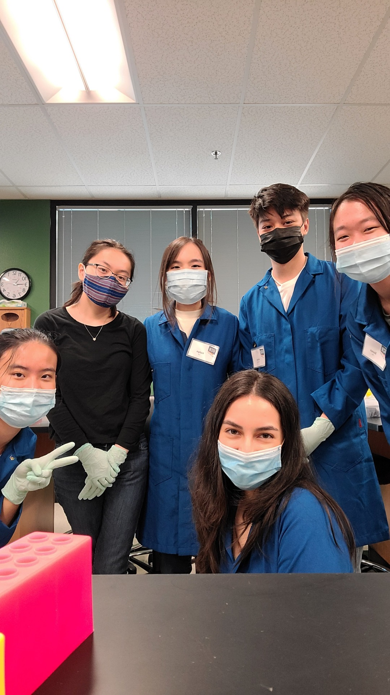
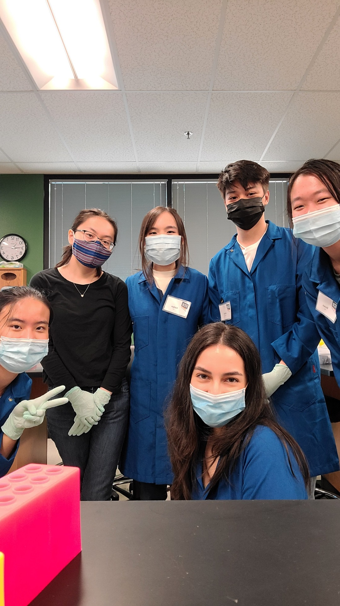

Portfolio





CVS - I currently work at CVS as a pharmacy technician. My job description includes maintaining records, monitoring inventory, responding to requests of patients and healthcare providers, processing prescriptions, dispensing medications, and stocking medications.
Kaiser Permanente - I currently work at Kaiser Permanente as a hospital intern. My tasks include assisting with basic patient care tasks including ambulating, bathing, feeding, changing, re-positioning, and transfer.
Chino Valley Medical Center - I previously worked at Chino Valley Medical Center as a hospital intern. I was in numerous departments such as Radiology/Ultrasound, Telemetry/Medical Surg, Emergency Room, and Phlebotomy.
• Process third party billing claims and assist with prior authorization completion
• Working as a team to fulfill prescription orders accurately and efficiently with an in-depth understanding of each workstation contributing to both patient outcomes and broader team goals
• Assist pharmacists in answering phone calls in a prompt and courteous manner while proactively identifying and resolving potential problems with patients
• Assisted with basic patient care tasks including ambulating, bathing, feeding, changing, re-positioning, and transfers
• Supplied care instructions and educational materials to inform patients of their care plan and kept track of their medications and possible side effects
• Conducted inpatient comfort care rounds and promptly answer call lights to promote patient satisfaction
• Transported patients and helped with discharge procedures
• Serve as a constructive and positive role model for personal behavior and academic pursuits
• Demonstrate knowledge of campus resources and strategies related to personal and academic success and serve as a referral agent to appropriate University and community services based on students’ needs
• Initiate, plan, and implement programs to create community development and support that encourage students in the development of themselves
• Respond to student behavior that is inappropriate and in violation of Residential Life and Campus policies and procedures